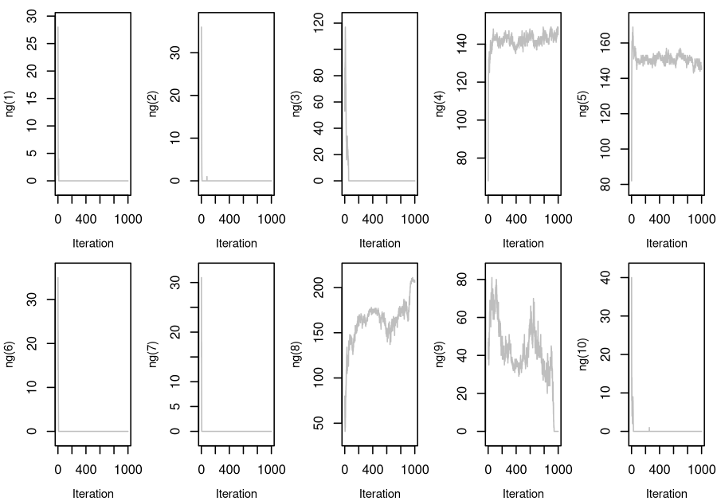
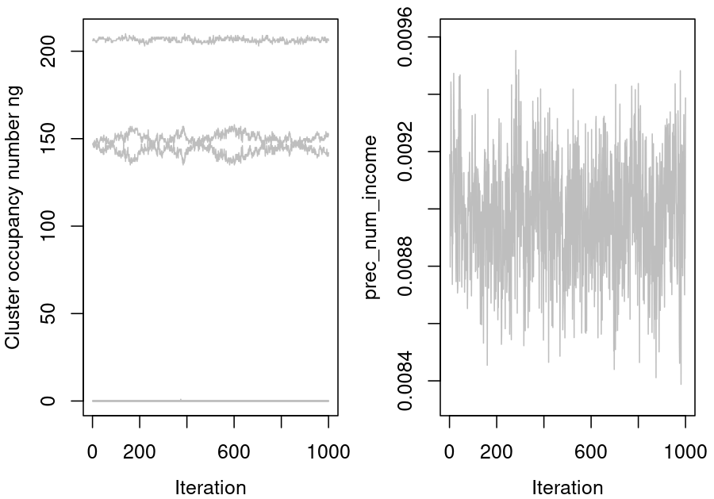
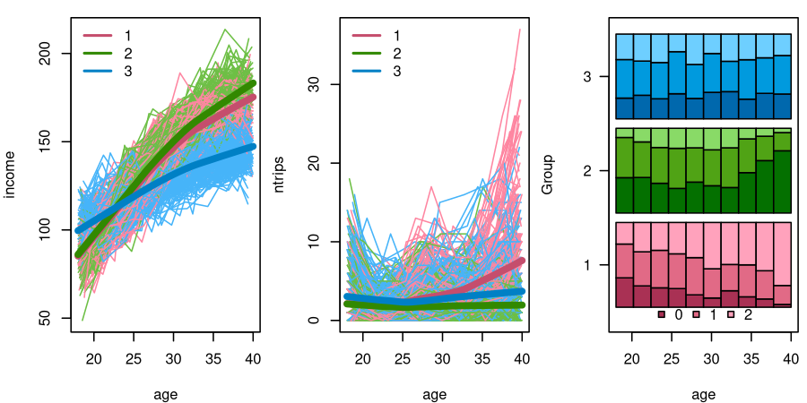

Overview
The R package clustGLMM provides tools for Bayesian estimation and inference for modelling clusterwise multivariate regression models for numeric, count, binary, ordinal and count outcomes observed repeatedly on the same units and where possible relations among outcomes are captured through a joint distribution of random effects. The clusters are defined through cluster-specific parameters, which the analyst can choose, e.g., with respect to the regression coefficients. In particular, the model specification for each regression model via the formula is specific to the outcome and consists of four parts: (1) fixed - regression coefficients common to all clusters, (2) group - group-specific regression coefficients, (3) random - random effects specific for each unit, (3) offset - name of an offset variable (if needed). Estimation is performed using MCMC sampling combining Gibbs and Metropolis-Hastings steps. Post-processing tools allow to assess convergence and address label switching and provide visual diagnostics. Units may be classified based on sampled allocation indicators or by exploiting the posterior distribution of the classification probabilities. For more details see Vavra et al. (2024, doi:10.1007/s11222-023-10304-5)
Installation
The stable version of clustGLMM is available on CRAN and can be installed using:
install.packages("clustGLMM")License
The package is available under the General Public License version 2.
Illustration
Package and data can be loaded via:
First, the inputs are prepared:
family <- c(income = "num", ntrips = "poi", satisfaction = "ord")
formula <- list()
formula[["income"]] <- list(fixed = ~ 0, group = ~ age + I(age^2), random = ~ 1)
for (y in c("ntrips", "satisfaction")) {
formula[[y]] <- list(fixed = ~ 0, group = ~ age, random = ~ 1)
}
varying <- default_varying(prec_num = FALSE)
param <- default_param(prec_num_rte = 15, e0_rte = 200) Then, MCMC sampling is performed:
set.seed(12345678)
mcmc_burnin <- clustGLMM(formula, id = "i", family, data = psurvey, G = 10,
varying = varying, param = param, iter = 1000)To assess convergence, the occupance numbers of the components over the iterations is inspected:
plot(mcmc_burnin, ng_trace_chain_split = FALSE)
The tuning parameters are changed before continuing the MCMC sampling to reduce acceptance rates:
tuning <- default_tuning(const_proposal_e0 = 4.5, const_proposal_beta_poi = 2,
const_proposal_beta_ord = 4, const_proposal_a_ord = 2.2, const_proposal_b = 1.5)Then, MCMC sampling is continued:
set.seed(1234)
mcmc <- clustGLMM(formula, id = "i", family, data = psurvey, G = 10,
varying = varying, param = param, iter = 1000,
inits = mcmc_burnin$last)Again visual diagnostics are inspected to assess convergence:
par(mfrow = c(1, 2))
plot(mcmc, ng_trace_chain_split = TRUE, setparmfrow = FALSE)
plot(mcmc, what = "prec_num", yspec = "income", setparmfrow = FALSE)
Post-processing is performed to obtain an identified model:
set.seed(123456)
(mcmc_pp <- post_processing(mcmc))## ###------------------------------------------###
## ### Post-processed MCMC samples of clustGLMM ###
## ###------------------------------------------###
## -----------------------------------------------------------------------
## Chain 1
## -----------------------------------------------------------------------
## The new number of components for this chain: $G[1] = 3.
## We now have components: 1, 2, 3.
## Number of iterations with 3 components: 999 ( 99.90 %)
## Out of them, 0 (0.00 %) did not lead to a permutation when using k-means, these
## g-specific parameters are replaced with NA.
## Therefore, 999 (100.00 %) iterations have been permuted and aligned. These are now
## eligible for the analysis.The posterior distribution of the parameters can be inspected, e.g., the parameters of cluster 1 corresponding to the dependent variable ntrips:
sum_mcmc <- summary(mcmc_pp, burnin = 0, thin = 1)
print(sum_mcmc, which = "group_param", clusters = 1, pattern = "ntrips")## -----------------------------------------------------------------------
## Chain 1
## -----------------------------------------------------------------------
##
## Summary of the parameter estimates
## -----------------------------------------------------------------------
## Parameters specific for cluster g=1:
## Effect 2.5% 25% 50% Mean
## beta_poi_ntrips(1)[1] (Intercept) -1.31467038 -1.18195651 -1.13156031 -1.1368997
## beta_poi_ntrips(1)[2] age 0.07480618 0.07715431 0.07854806 0.0785877
## 75% 97.5%
## beta_poi_ntrips(1)[1] -1.07528402 -0.98680941
## beta_poi_ntrips(1)[2] 0.07982884 0.08324393The clustering solution can also be inspected:
print(mcmc_pp, which = "clustering")## ## Clustering based on sampled indicators:
## -----------------------------------------------------------------------
## Chain 1
## -----------------------------------------------------------------------
## The most-frequent number of non-empty components: 3
## Empty components:
## Non-empty components: 1, 2, 3
## 1 2 3
## 144 151 205
## Average certainty of assignment to a component:
## 1 2 3
## 0.9694069 0.9754788 0.9994580The data is plotted using the identified clustering to cluster the observations:
psurvey$Uclustering <- mcmc_pp$clustering[psurvey$i, 1]
par(mar = c(4, 4, 1, 0.5), mfrow = c(1, 3))
plot_num_vs_x_grouped(psurvey, "income", x = "age", id = "i", group = "Uclustering",
add_lowess = TRUE, legend_placement = "topleft")
plot_num_vs_x_grouped(psurvey, "ntrips", x = "age", id = "i", group = "Uclustering",
add_lowess = TRUE, legend_placement = "topleft")
plot_cat_vs_x_grouped(psurvey, "satisfaction", x = "age", group = "Uclustering")
References
Vávra, J., Komárek, A., Grün, B., Malsiner-Walli, G. Clusterwise multivariate regression of mixed-type panel data. Stat Comput 34, 46 (2024). https://doi.org/10.1007/s11222-023-10304-5